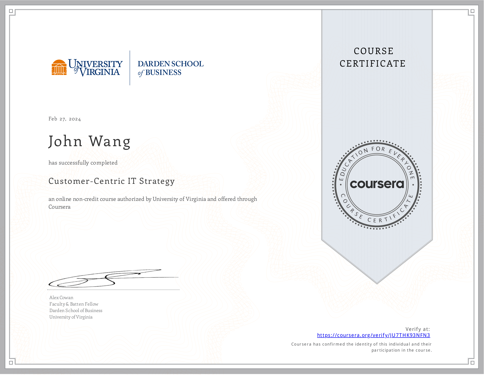
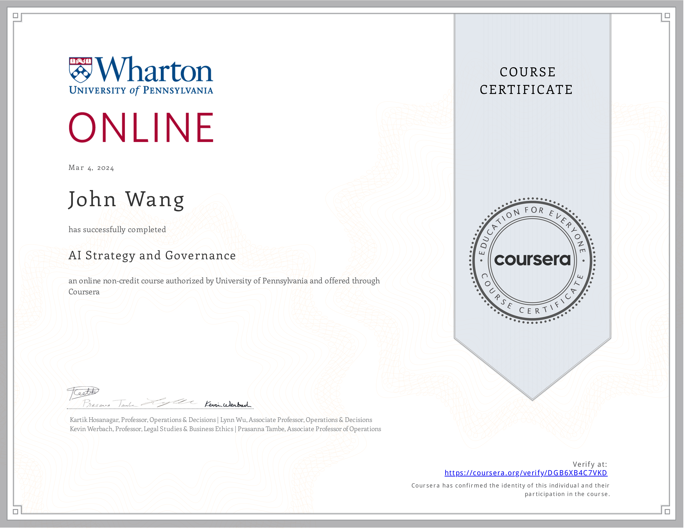

John's Strategy Certificates
Resources
Fundamentals (1)
Managing Strategy and Vision from Pluralsight by Curtis Webb
Management Consulting (2)
Management Consulting Specialization (5 Courses) from Emory University by John Kim

Consulting Approach to Problem Solving from Emory University by John Kim

Frameworks (2)
Customer-Centric IT Strategy from University of Virginia, Darden School by Alex Cowan

The Strategist's Challenge from University of Virginia, Darden School Foundation by Michael Lenox, Jared Harris
Product Management (1)
Product Management: Strategy and Vision from Pluralsight by Jeremy Jarrell

Artificial Intelligence (1)
AI Strategy and Governance from University of Pennsylvania, Wharton School
